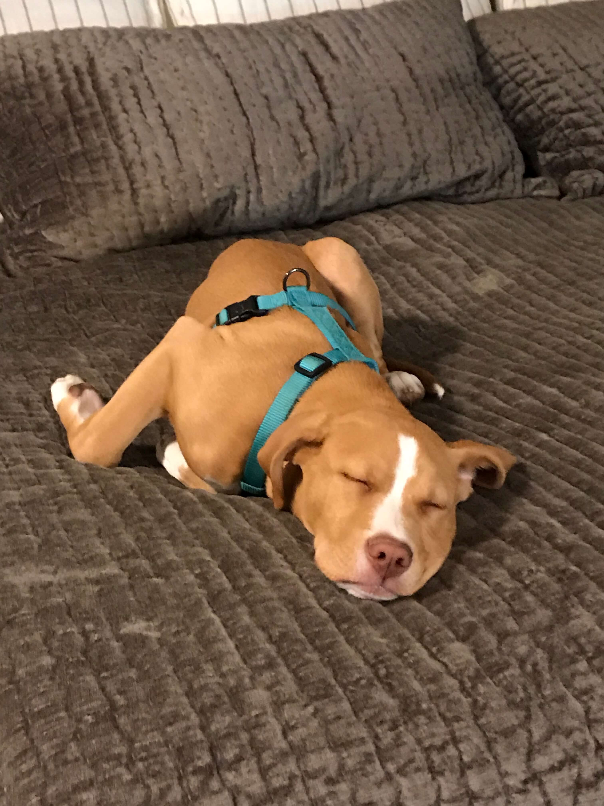

Paneener Wiener is a Snoozer
This is what a good boy looks like after a long day of playing. Panini is an expert snoot booper, dog walker, and model. He examines the integrity of woven baskets very well and will do so with every chance he gets. Below is a list of his favorite things: